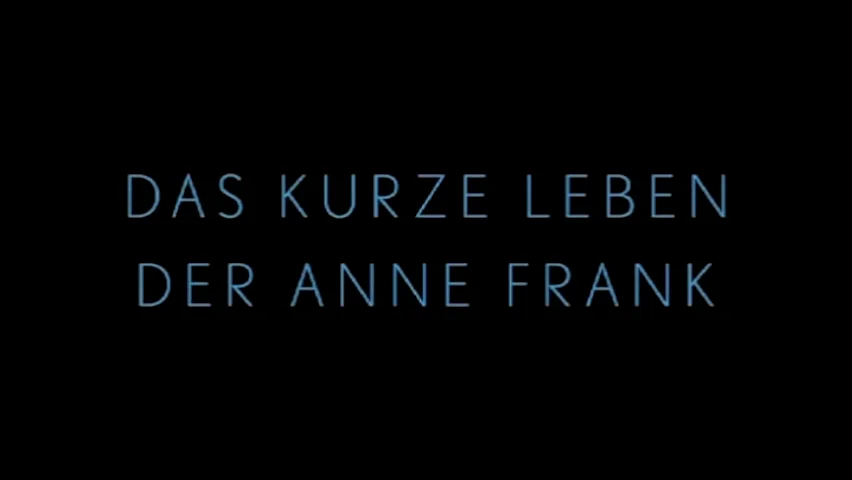
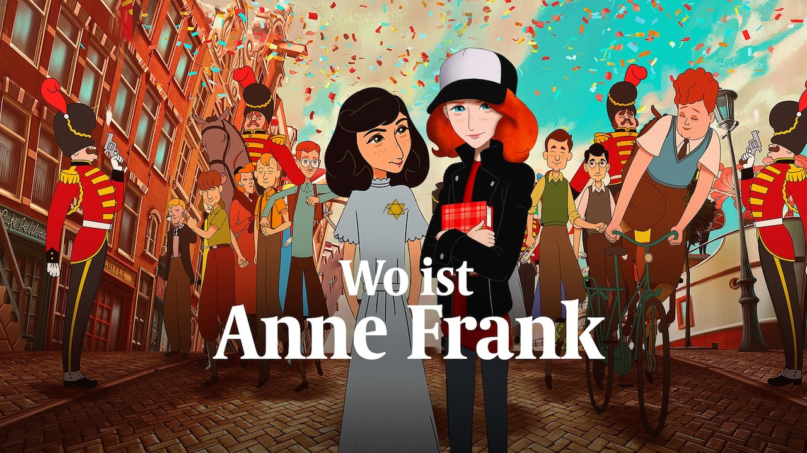

Wer war Anne Frank?
Checker Tobi geht der Frage nach, wer Anne Frank war und warum ihr Tagebuch bis heute Menschen auf der ganzen Welt bewegt. Die Sendung erklärt Anne Franks Lebensgeschichte kindgerecht und zeigt, weshalb Erinnerung an die Zeit des Nationalsozialismus wichtig ist.
Jetzt ansehenAnne Frank
Die Sendung „TRIFF" stellt Anne Frank vor und begleitet wichtige Stationen ihres Lebens. Durch Spielszenen, historische Hintergründe und Erklärungen entsteht ein anschauliches Bild davon, wer Anne Frank war, wie sie lebte und warum ihr Tagebuch bis heute bedeutend ist.
Jetzt ansehen
Das kurze Leben der Anne Frank
Die animierte Kurzbiografie erzählt Anne Franks Lebensgeschichte von ihrer Kindheit in Frankfurt über die Flucht nach Amsterdam bis zur Zeit im Hinterhaus und ihrer Verfolgung durch die Nationalsozialisten.
Jetzt ansehen
Anne Frank – So entstand ihr Tagebuch
Wer war Anne Frank und warum wurde ihr Tagebuch weltberühmt? Das Video erklärt Anne Franks Lebensgeschichte, die Flucht nach Amsterdam, das Leben im Versteck und die Bedeutung ihres Tagebuchs als historisches Zeitdokument.
Jetzt ansehenAnne Franks Tod & ihr Leben im geheimen Anbau im Schatten des Naziregimes
Was geschah nach der Entdeckung des Hinterhauses? Das Video schildert die Verhaftung der Familie Frank, die Deportation über Westerbork und Auschwitz sowie Anne Franks letzte Lebensmonate im Konzentrationslager Bergen-Belsen.
Jetzt ansehenWo ist Anne Frank?
Anne Franks Geschichte aus Sicht ihrer imaginären Freundin Kitty. Der Film verbindet historische Ereignisse mit Fragen nach Erinnerung, Ausgrenzung und Menschlichkeit.
Jetzt ansehen